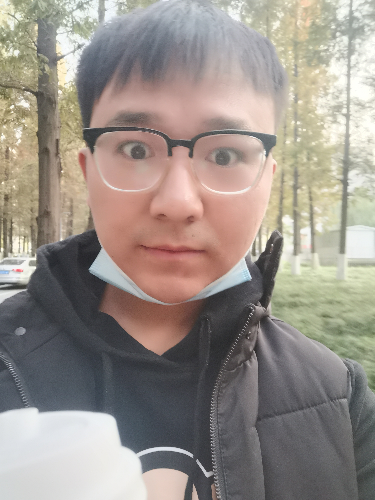
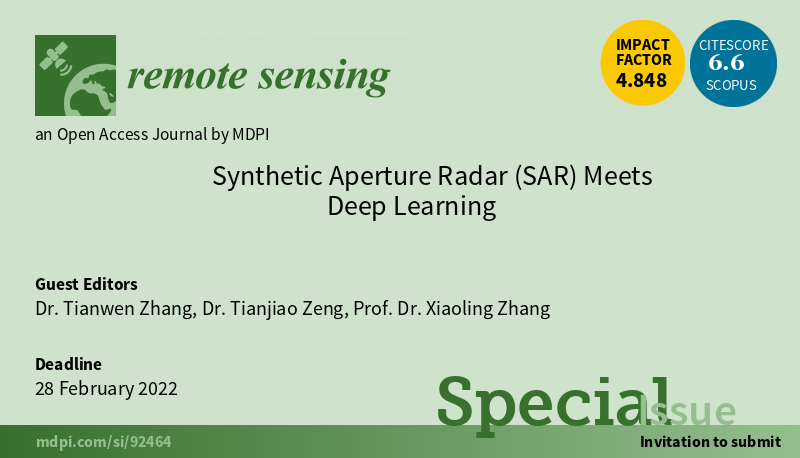
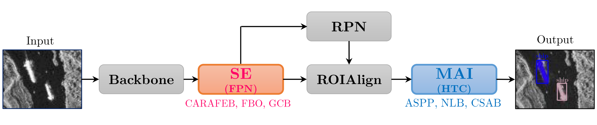
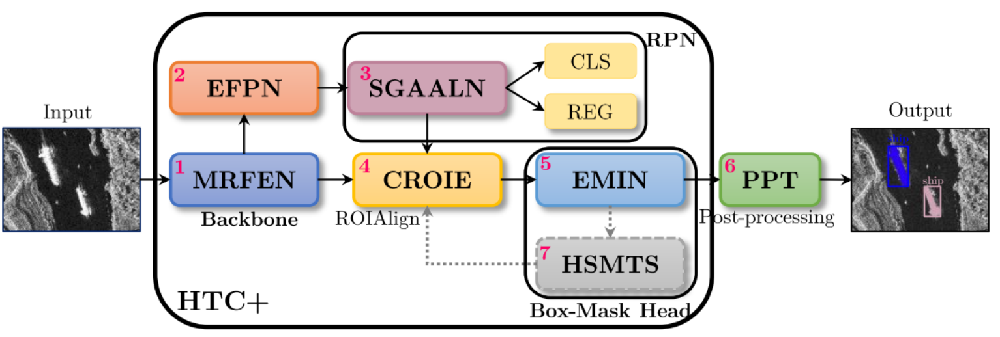

Tianwen Zhang (张天文)Ph.D. Radar Detection and Imaging Technology Team @ UESTC
School of Information and Communication Engineering,
|
News
Call for PapersLearn more and submit your manuscript |
About Me
I am currently a Three-Year Ph.D. student at University of Electronic Science and Technology of China, Chengdu, China, guided by Prof. Xiaoling Zhang.
I pursued my master degree at School of Electronic Science and Engineering (National Exemplary School Microelectronics), University of Electronic Science and Technology of China.
I received my bachelor degree from School of Computer and Information Engineering, Central South University of Forestry and Technology in 2017.
Research Interests
Artificial intelligence (AI) / deep learning (DL) / machine learning (ML) / computer vision (CV) / image processing / detection, recognition, tracking, and segmentation / Radar / remote sensing /camera image (ISP)/ image enhancement (noise reduction and super resolution) / automatic driving
Biography
Publications
|  |
A Mask Attention Interaction and Scale Enhancement Network for SAR Ship Instance Segmentation Tianwen Zhang, Xiaoling ZhangIEEE Geoscience and Remote Sensing Letters, in press, 2022 |
| | |
|  |
HTC+ for SAR Ship Instance Segmentation Tianwen Zhang, Xiaoling ZhangRemote Sensing, 2022 [PDF] |
| | |

|
A Full-Level Context Squeeze-and-Excitation ROI Extractor for SAR Ship Instance Segmentation Tianwen Zhang, Xiaoling ZhangIEEE Geoscience and Remote Sensing Letters, 2022 [PDF] |
| |
Awards
| |
Reviewer
| |